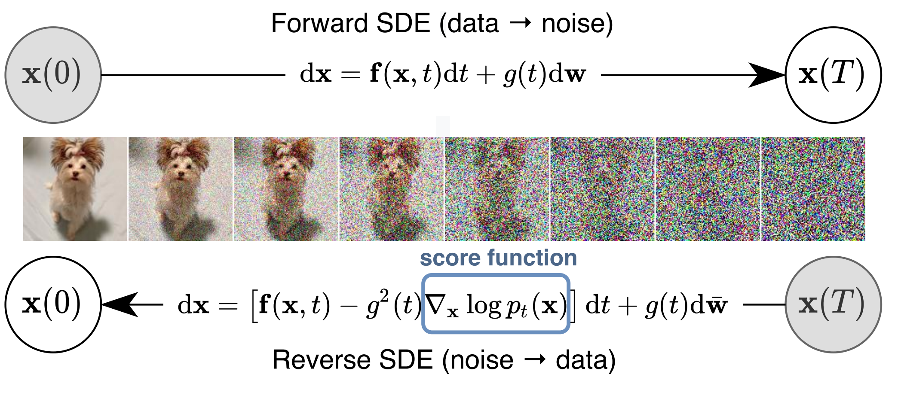
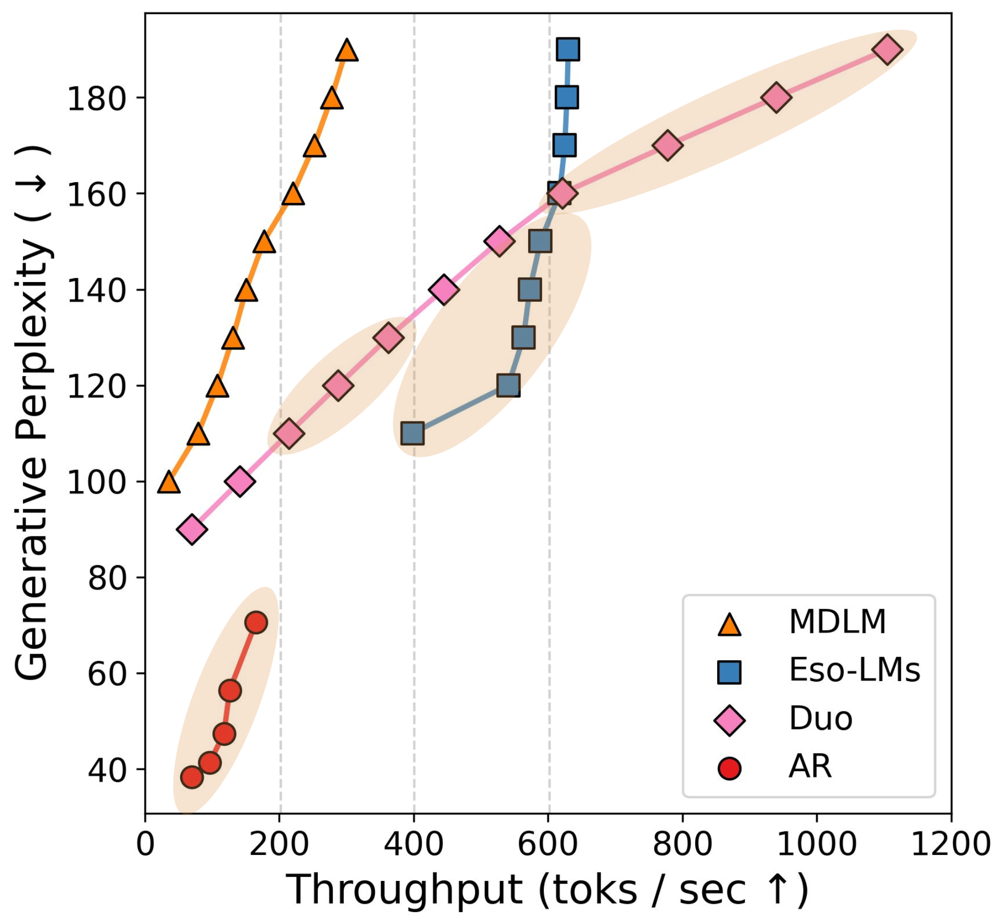
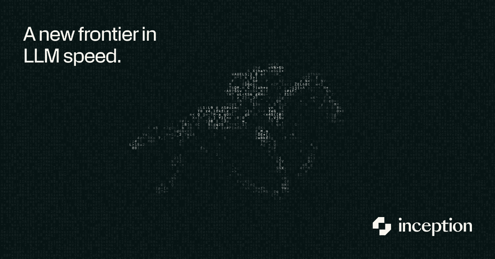

Why Diffusion LLMs
Behave Differently,
and How to Control Them
From Gaussian SDEs to concrete scores and parallel decoding
Albert No · Yonsei University
June 2026
Diffusion
From Gaussian SDEs and the score to discrete diffusion losses
Image Generation: Learn a Distribution, then Sample

1. Learn the distribution
Fit $p_\theta \approx p_{\text{data}}$ over images.
2. Sample from the distribution
Draw a fresh $x \sim p_\theta$.
Continuous Diffusion at a Glance

Drives image, video, audio generation: Stable Diffusion, Imagen, DALL·E, Sora.
Itô Diffusion and Anderson's Theorem
Forward noising is an Itô diffusion (VP: $f=-\tfrac{\beta_t}{2}x$; VE: $f=0$):
Theorem (Anderson, 1982).
Time-reversal keeps the same marginals $p_t$ and is again an Itô diffusion:
Proof key: both marginals solve the same Fokker–Planck PDE — uniqueness forces $\bar p_t = p_t$.
Everything reduces to the score $\partial_x\log p_t$ — learned by denoising score matching.
Sampling: Integrate the Reverse SDE
Anderson turns generation into an initial-value problem: start from easy noise, flow back to data.
data $\to$ noise: $dX_t = f\,dt + g\,dW_t$, $X_0\sim p_{\text{data}}$, $X_T\sim\mathcal{N}(0,I)$
noise $\to$ data: $d\bar X_t = (f - g^2\,\partial_x\log p_t)\,dt + g\,d\bar W_t$, draw $\bar X_T\sim\mathcal{N}(0,I)$
Masked Diffusion at a Glance
Forward progressively masks tokens; reverse unmasks any-order from bidirectional context.
Block dLLMs (e.g. LLaDA 8B) already match LLaMA3-8B on in-context tasks. Promising.
AR vs. Diffusion LLMs
| Autoregressive LLM | Diffusion LLM | |
|---|---|---|
| Order | Fixed left-to-right | Any order |
| Architecture | Causal decoder | Bidirectional encoder |
| Context | Left only | Full bidirectional |
| Parallelism | Sequential | Multi-token per step |
| Training signal | Next-token prediction | Mask prediction, any position |
Discrete Analogue: A Ratio, Not a Gradient
On a finite state space the gradient $\partial_x\log p_t$ has no meaning.
A continuous-time Markov chain noises the data:
$\boldsymbol{\partial_t\,p_t = Q_t\,p_t}$
Learn the concrete score $s_\theta(x,t)_y \approx p_t(y)/p_t(x)$ — the discrete gradient.
In discrete diffusion: Sun, Yu, Dai, Schuurmans, Dai, "Score-Based Continuous-Time Discrete Diffusion Models", ICLR 2023.
Score Entropy: A Tractable Loss
- A Bregman divergence in $s_\theta$ — uniquely minimized at the true ratio.
- Intractable marginal ratio swapped for the known conditional kernel — discrete Vincent.
First discrete diffusion to match GPT-2 perplexity.
Absorbing Score Is Time-Free
Theorem (Ou et al., 2024).
For absorbing (masked) diffusion the concrete score factorizes:
The clean conditional is $t$-independent — the network drops $t$ as an input.
Training $=$ Any-Order GPT
One objective: predict any token from any partial subsequence, by cross-entropy.
random order $\sigma$, random cut $k$ — over all orders.
No time, no Bregman. A dLLM is an any-order GPT.
The dLLM
A universal marginal predictor — LLaDA, scaling, and shipping systems
What a Trained dLLM Gives You
Any observed $S \subseteq \{1,\ldots,N\}$, any masked $i \notin S$:
$S = \{1, 4, 5\}$ → predict at $i \in \{2, 3, 6\}$.
A dLLM is a universal marginal predictor. The decoder is now a degree of freedom.
LLaDA & LLaDA 2.0
LLaDA 8B
- Competitive with LLaMA3-8B on in-context learning
- Beats GPT-4o on reverse poem completion
- Trained from scratch under PT + SFT
LLaDA 2.0 (MoE)
- First dLLM at 100B scale
- Parallel decoding up to 535 tok/s
- Closes the gap to frontier AR on reasoning
Zhu et al., LLaDA 2.0, 2025.
Diffusion Beats AR Under Data Scarcity

Past a critical compute point, diffusion's Pareto frontier overtakes AR.
Compute-bound → AR; data-bound → diffusion.
Scaling Beyond Masked Diffusion
MDLM is the masked dLLM from the previous slides.
Newer variants push the frontier: Duo and Eso-LMs.

Duo and Eso-LMs extend the speed–quality frontier well past MDLM.
dLLMs in Practice

Mercury — Inception Labs
- Commercial dLLM; tokens in parallel
- Several× faster, < ½ the cost
- Mercury 2 (reasoning) · Edit 2 (coding)
DiffusionGemma — Google
- Open 26B MoE, 3.8B active
- 1000+ tok/s on one H100; 256 tok/pass
- Built on Gemma 4 + Gemini Diffusion
DAPD
Dependency-aware parallel decoding via attention · ICML 2026
Bumjun Kim*, Dongjae Jeon*, Moongyu Jeon*, Albert No
Why Parallel Decoding?
One forward pass returns every marginal $p_\theta(x_i \mid x_S)$ at once — across all masked positions.
- Unmasking one token per step wastes the other marginals.
- Unmasking many per step cuts NFE — fewer forward passes, faster sampling.
Parallel decoding is the natural dLLM-native mode.
Parallel Decoding: A Formal Problem
Unmasking $U \subseteq \mathcal{M}$ by independent draws is exact iff the joint factorizes:
Otherwise the parallel-decoding error is the total correlation:
The Challenge: Marginals, not the Joint
Per step the model gives marginals $p_\theta(x_i \mid x_S)$, not the joint.
Each marginal is fine; the joint “San York” is not. $\mathrm{TC} > 0$ → incoherent.
Sampling on a Dependency Graph
dependency graph
Sample E first?
Sample D first?
Greedy: Unmask a Maximum Independent Set
Each step unmasks an independent set. Where much prior work sits, implicitly or explicitly.
Greedy is only locally optimal.
Parallel Sampling $=$ Graph Coloring
Edge $(i,j)$ $\Leftrightarrow$ $\mathrm{TC}$ contribution $>\epsilon$. A color class is a conditionally-independent set.
Minimize steps (NFE) $=$ fewest color classes $=$ chromatic number $\chi(G)$.
Attention $=$ Dependency Oracle
- Nodes = masked positions (random variables $x_i$).
- Edges = dependencies between them — that is the dependency graph.
Use the model's own self-attention as the coupling signal:
Edge $(i,j)$ when $s_{ij} > \tau_t$ — a tractable surrogate for the total-correlation test.
Training-free. No auxiliary model.
Algorithm: Coloring with Lookahead
- Edge $(i,j)$ when attention $s_{ij} > \tau_t$.
- Color high-degree nodes first (Welsh–Powell).
- Unmask one color class per step; recompute; repeat.
Lookahead minimizes total steps — not the current batch (greedy MIS).
More from the Lab
Rainbow Padding, safety, watermarking, reversal curse, info theory
Rainbow Padding: Curing <eos> Overflow
SFT reuses <eos> as terminator and placeholder → a positional bias:
Confidence decoding unmasks <eos> first; bidirectional context propagates it backward → the answer collapses.
Fix: a deterministic cycle of distinct pad tokens breaks the bias. ICLR 2026.
More from the Lab
Information-Theoretic Discrete Diffusion
Exact entropy / mutual-information identities for the masked process. NeurIPS 2025.
Reversal Curse, Mitigated
Any-order training breaks the "A is B $\Rightarrow$ B is A" failure. Preprint 2026.
A2D — Safety Alignment
Any-order, any-step token-level safety for dLLMs. ICLR 2026.
dgMARK — Watermarking
Decoding-order watermark; robust and distortion-aware. ICML 2026.
Albert No · Yonsei University